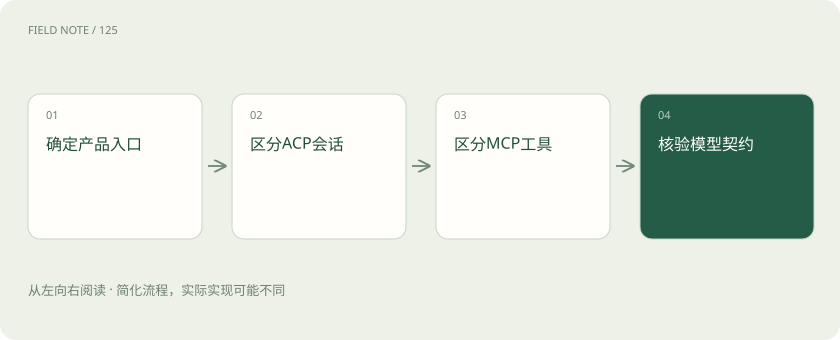
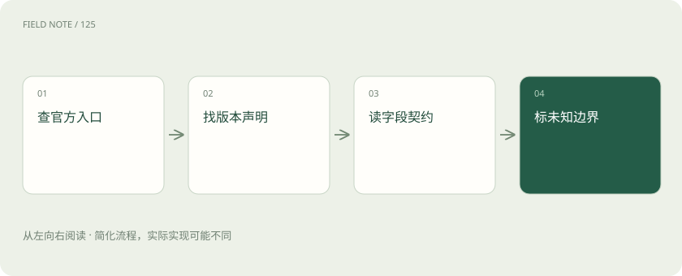

先读哪些知识
先用一个类比理解
类比只帮助建立直觉，不等同于技术的完整机制。
一图看懂

先识别Kiro是什么产品
Kiro提供IDE、CLI等智能体工作入口，帮助用户围绕项目提出任务、调用工具和管理工作过程。它可以使用多种模型，但“能选择模型”不等于它本身提供面向任意应用的统一模型HTTP服务。产品、智能体运行环境与模型推理API处在不同层，必须先确定正在讨论哪个边界。
理解这一点不需要编程。用户在聊天框提交任务后，产品可能准备上下文、应用权限规则并多次调用模型和工具，最后呈现结果。界面上的一次对话并不必然对应一次模型请求；拿一次界面体验推断后端消息格式，往往遗漏产品编排。
ACP连接编辑器与智能体
Kiro官方提供ACP集成说明。ACP的讨论对象是编辑器或其他客户端如何与智能体交互，让不同工作界面连接智能体能力。它描述的会话、通知和权限交互属于智能体接入层，不是向基础模型提交聊天消息的同层接口，也不能由支持ACP推断支持某个Chat Completions端点。
检查集成时，应问谁启动智能体、谁持有会话、谁呈现权限请求、谁记录工具执行结果。编辑器显示一段文本只是交互的一部分，文件修改与工具审批仍要对应完整生命周期。把ACP简单理解为文本转发，会使中断、会话恢复或执行确认失去负责方。
MCP连接智能体与外部能力
MCP用于让Kiro连接外部工具、资源和提示等能力。官方文档提供服务器配置、工具使用和远程授权的说明，这些接口服务于智能体获取资料或执行动作。一个MCP服务器地址通常是工具服务入口，而不是可替代模型供应商base URL的地址。
教学例子中，工单MCP可以查询工单并返回结构化结果，Kiro再将结果用于后续推理。模型负责理解任务，智能体负责决定是否请求工具，服务器负责执行获准操作；三个角色的成功与失败分别观察。MCP连接正常只能说明工具通道可用，不能证明模型服务、项目上下文或组织权限全部正常。
图解：证据判读顺序

provider这个词需要补全对象
官方模型页列出Kiro可使用的提供商模型和Auto选择方式，模型可用性还涉及产品入口、配置地域和组织安排。与此同时，文档中的identity provider可能指登录身份提供商，context provider可能指上下文来源，MCP中的provider又可能与OAuth授权有关。不能看到provider一词就解释为自定义模型接入。
截至2026年11月5日本文核验的模型、ACP与MCP官方页面，没有获得可将任意模型base URL注册成Kiro模型供应商的通用公开契约证据。这是当前核验范围的结论，不是宣称该产品永远没有这项能力。遇到新功能时应寻找明确的配置字段、支持入口、版本要求和正式文档，再更新判断。
模型选择不等于开放模型服务
产品给用户提供模型选择，是消费模型能力的承诺；向第三方应用提供模型API，则需要明确的请求路径、鉴权方式、输入输出schema、限流、错误和版本政策。两者可能同时存在，但前者本身不能证明后者。Kiro订阅中的使用额度也不能直接解释为某个公开API账户的Token余额。
因此迁移评审要分别记录用户登录、组织订阅、模型可用范围和外部应用调用契约。不要将CLI自动化或无界面运行等同于基础模型API：它们仍可能运行完整智能体，读取工作目录、处理工具和维护任务。评估输出时也要明确拿到的是最终任务结果，还是逐个模型调用的原始回包。
社区转换器只能证明其自身实现
kiro2api等社区项目可能尝试把某种产品交互转换成其他客户端熟悉的接口。项目名称或兼容演示能说明作者实现了适配，却不能自动证明Kiro官方发布了稳定公开模型协议。尤其不能把逆向得到的internal transport、临时字段或服务地址写成官方规范，更不能将某次成功推广为长期兼容保证。
可以研究公开仓库的适配结构、README声称的版本和故障记录，形成待核实线索；但必须区分直接观察、作者推断与官方承诺。本文不进行登录抓包，不读取账号Token，也不推导私有鉴权。缺乏正式证据时将wire格式标注未知，比编造看似完整的字段表更有助于读者判断维护风险。
按层定位失败才能找到负责人
若编辑器无法建立会话，先核对ACP客户端、智能体启动和版本支持；若任务运行却查不到工单，查看MCP服务器状态、工具暴露范围及授权；若模型不可用，再检查Kiro模型目录、所用产品入口和组织设置。这些现象可以同时表现为聊天失败，但它们对应完全不同的修复位置。
工具审批也不能与模型鉴权混淆。批准一次外部工具动作，不代表允许向任意服务外发上下文；登录Kiro不代表自动授权某个MCP服务器。记录时保留发生阶段、请求对象、用户可见错误和已确认事实，避免在没有证据时把所有失败都归咎于模型接口不兼容。
图解：分层排障
用一张边界表评估教学集成
教学案例：团队想在已有编辑器中使用Kiro，并查询内部知识库。第一项评估ACP是否适用于目标编辑器与Kiro版本；第二项评估知识库MCP的工具权限和结果来源；第三项确认Kiro模型选择及组织要求。三项各有验收对象，不需要先寻找一个臆测的“统一Kiro模型API”。
若业务真正需要给多个应用提供模型网关，应另选有明确公开推理契约的服务，并单独评审鉴权、流式语义和计量。这个案例仅作概念教学，没有真实账号测试和性能数据。版本边界保留查询日期及官方来源，未来如果Kiro发布自定义模型供应商配置或公共推理服务，就依据正式字段与支持政策更新相关边界，而不靠旧印象维持结论。
放在一起对比
| 边界 | 承诺 | 核验对象 |
|---|---|---|
| ACP | 编辑器与智能体交互 | 会话和权限生命周期 |
| MCP | 智能体访问工具资源 | 服务器能力与授权 |
| 模型provider | 提供推理能力 | 正式模型接口契约 |
| 社区转换器 | 项目自身适配 | 来源版本与维护承诺 |
放进真实场景
教学案例：编辑器通过ACP连接Kiro，知识库通过MCP提供查询工具；模型由产品目录选择。三条链分别验收，不把知识库地址填成模型端点。
别踩这个误区
想一想
社区转换器成功返回聊天文字，能证明Kiro公布了稳定模型API吗？
不能。成功只证明该实现处理了特定交互；公开稳定契约还需要官方路径、鉴权、schema、版本与支持范围的证据。
关联阅读
资料与边界
本文为原创知识讲解。类比和图示经过简化；示例数字不代表实测或报价。整理日期：2026-11-05。文末列出对应技术的原始资料，具体功能与版本支持请以原文为准。